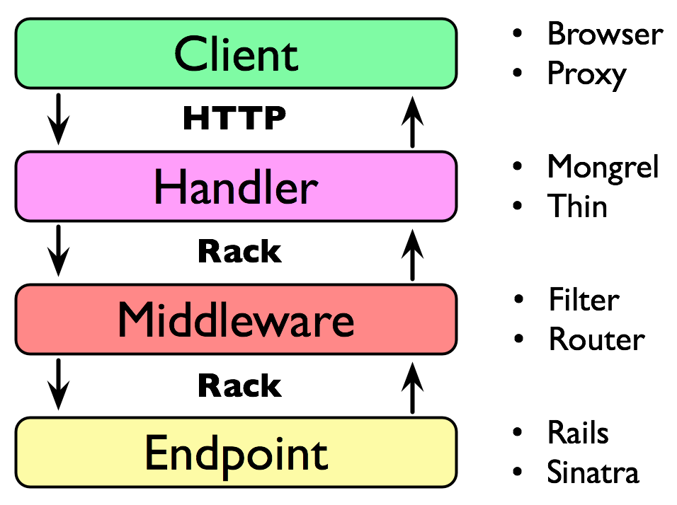

Sig: Ejemplo de Middleware: Rack::ETag Sup: Rack, un Webserver Ruby Ant: Un Ejemplo Simple: Piedra, Con:
We mentioned earlier that between the server and the framework, Rack can be customized to your applications needs using middleware.
The fundamental idea behind Rack middleware is
Si tenemos una app Rack rack_app
y dos middlewares con nombres
MiddleWare1
y
MiddleWare2 que queremos usar, podemos escribir esto:
Rack::Handler::Thin.run Middleware1.new(Middleware2.new(rack_app))Si necesitamos pasar opciones en el segundo argumento la llamada quedaría mas o menos como esto:
Rack::Handler::Thin.run(
Middleware1.new(
Middleware2.new(rack_app, options2),
options1)
)
Si fueran mas de dos middlewares el correspondiente
código se volverá aún mas ilegible y hace mas fácil que metamos
la pata cuando queramos hacer algo como - por ejemplo -modificar
el orden de los middleware.
La clase Rack::Builder implementa un pequeño DSL para facilitar la construcción de aplicaciones Rack.
Rack::Builder is the thing that glues various Rack middlewares and applications together and convert them into a single entity/rack application.
A good analogy is comparing Rack::Builder object with a stack, where at the very bottom is your actual rack application and all middlewares on top of it, and the whole stack itself is a rack application too.

Dada la aplicación:
infinity = Proc.new {|env| [200, {"Content-Type" => "text/html"}, env.[inspect]] }
Rack::Handler::Mongrel.run infinity, :Port => 9292
Podemos reescribirla:
[~/sinatra/rack/rack-builder/map]$ cat app_builder.rb
require 'rack'
infinity = Proc.new {|env| [200, {"Content-Type" => "text/html"}, [env.inspect]]}
builder = Rack::Builder.new
builder.run infinity
Rack::Handler::Thin.run builder, :Port => 9292
o bien:
[~/sinatra/rack/rack-builder/map]$ cat app_builder2.rb
require 'rack'
infinity = Proc.new {|env| [200, {"Content-Type" => "text/html"}, [ env.inspect ]] }
builder = Rack::Builder.new do
run infinity
end
Rack::Handler::Thin.run builder, :Port => 9292
[~/local/src/ruby/sinatra/rack/rack-builder/simple1]$ cat app.rb
require 'rack'
require 'rack/server'
app = Rack::Builder.new do
use Rack::CommonLogger
use Rack::ShowExceptions
use Rack::Lint
map "/chuchu" do
run lambda { |env| [ 200, {}, ["hello"]] }
end
map "/chachi" do
run lambda { |env| [ 200, {}, ["world"]] }
end
run lambda { |env| [ 200, {}, ["everything"]] }
end
Rack::Server.start :app => app
[~/rack/rack-from-the-beginning(master)]$ cat hello_world.rb
# hello_world.rb
require 'rack'
require 'rack/server'
class EnsureJsonResponse
def initialize(app = nil)
@app = app
end
# Set the 'Accept' header to 'application/json' no matter what.
# Hopefully the next middleware respects the accept header :)
def call(env)
env['HTTP_ACCEPT'] = 'application/json'
puts "env['HTTP_ACCEPT'] = #{env['HTTP_ACCEPT']}"
@app.call(env) if @app
end
end
class Timer
def initialize(app = nil)
@app = app
end
def call(env)
before = Time.now
status, headers, body = @app.call(env) if @app
headers['X-Timing'] = (Time.now - before).to_i.to_s
[status, headers, body]
end
end
class HelloWorldApp
def initialize(app = nil)
@app = app
end
def self.call(env)
[200, {}, ['hello world!']]
end
end
# put the timer at the top so it captures everything below it
app = Rack::Builder.new do
use Timer # put the timer at the top so it captures everything below it
use EnsureJsonResponse
run HelloWorldApp
end
Rack::Server.start :app => app
~/rack/rack-from-the-beginning(master)]$ cat Rakefile
desc "run the server"
task :default do
sh "rackup"
end
desc "run the server hello_world.rb"
task :server do
sh "ruby hello_world.rb"
end
desc "run the client"
task :client do
sh %q{curl -v 'http://localhost:9292'}
end
desc "run the client for hello_world"
task :client2 do
sh %q{curl -v 'http://localhost:8080'}
end
[~/rack/rack-from-the-beginning(master)]$ rake server ruby hello_world.rb >> Thin web server (v1.5.1 codename Straight Razor) >> Maximum connections set to 1024 >> Listening on 0.0.0.0:8080, CTRL+C to stop
[~/rack/rack-from-the-beginning(master)]$ rake client2 curl -v 'http://localhost:8080' * About to connect() to localhost port 8080 (#0) * Trying ::1... Connection refused * Trying 127.0.0.1... connected * Connected to localhost (127.0.0.1) port 8080 (#0) > GET / HTTP/1.1 > User-Agent: curl/7.21.4 (universal-apple-darwin11.0) libcurl/7.21.4 OpenSSL/0.9.8y zlib/1.2.5 > Host: localhost:8080 > Accept: */* > < HTTP/1.1 200 OK < X-Timing: 0 < Connection: close < Server: thin 1.5.1 codename Straight Razor < * Closing connection #0 hello world!
[~/rack/rack-from-the-beginning(master)]$ rake server ruby hello_world.rb >> Thin web server (v1.5.1 codename Straight Razor) >> Maximum connections set to 1024 >> Listening on 0.0.0.0:8080, CTRL+C to stop env['HTTP_ACCEPT'] = application/json
Casiano Rodríguez León